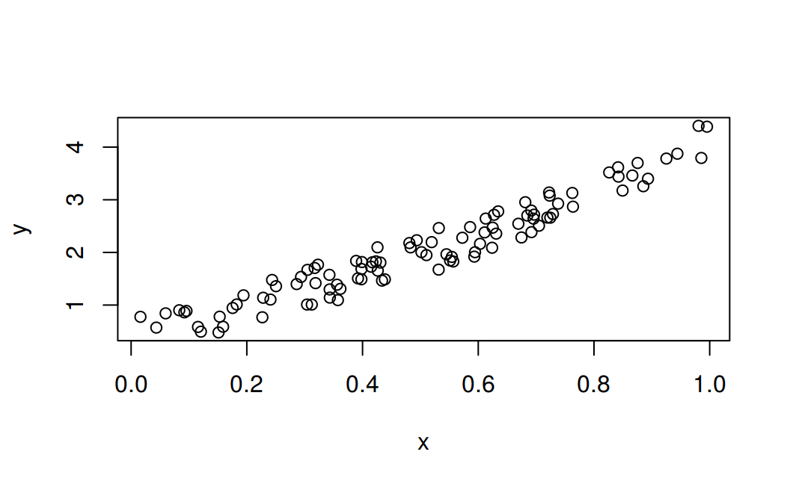
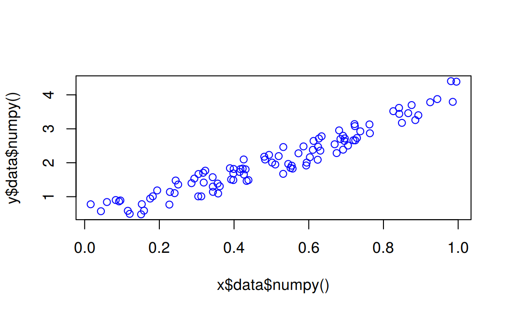

Chapter 6 Linear Regression
6.1 Case 1: simple linear regression
6.2 Creating the network model
Our network model is a simple Linear layer with an input and an output shape of one.
And the network output should be like this
Net(
(hidden): Linear(in_features=1, out_features=1, bias=True)
)## <torch._C.Generator>py_run_string("import torch")
main = py_run_string(
"
import torch.nn as nn
class Net(nn.Module):
def __init__(self):
super(Net, self).__init__()
self.layer = torch.nn.Linear(1, 1)
def forward(self, x):
x = self.layer(x)
return x
")
# build a Linear Rgression model
net <- main$Net()
print(net)## Net(
## (layer): Linear(in_features=1, out_features=1, bias=True)
## )6.3 Datasets
Before you start the training process, you need to know our data. You make a random function to test our model. \(Y = x3 sin(x)+ 3x+0.8 rand(100)\)
np$random$seed(123L)
x = np$random$rand(100L)
y = np$sin(x) * np$power(x, 3L) + 3L * x + np$random$rand(100L) * 0.8
plot(x, y)
Before you start the training process, you need to convert the numpy array to Variables that supported by Torch and autograd.
6.3.1 Converting from numpy to tensor
Notice that before converting to a Torch tensor, we need first to convert the R numeric vector to a numpy array:
# convert numpy array to tensor in shape of input size
x <- r_to_py(x)
y <- r_to_py(y)
x = torch$from_numpy(x$reshape(-1L, 1L))$float()
y = torch$from_numpy(y$reshape(-1L, 1L))$float()
print(x, y)## tensor([[0.6965],
## [0.2861],
## [0.2269],
## [0.5513],
## [0.7195],
## [0.4231],
## [0.9808],
## [0.6848],
## [0.4809],
## [0.3921],
## [0.3432],
## [0.7290],
## [0.4386],
## [0.0597],
## [0.3980],
## [0.7380],
## [0.1825],
## [0.1755],
## [0.5316],
## [0.5318],
## [0.6344],
## [0.8494],
## [0.7245],
## [0.6110],
## [0.7224],
## [0.3230],
## [0.3618],
## [0.2283],
## [0.2937],
## [0.6310],
## [0.0921],
## [0.4337],
## [0.4309],
## [0.4937],
## [0.4258],
## [0.3123],
## [0.4264],
## [0.8934],
## [0.9442],
## [0.5018],
## [0.6240],
## [0.1156],
## [0.3173],
## [0.4148],
## [0.8663],
## [0.2505],
## [0.4830],
## [0.9856],
## [0.5195],
## [0.6129],
## [0.1206],
## [0.8263],
## [0.6031],
## [0.5451],
## [0.3428],
## [0.3041],
## [0.4170],
## [0.6813],
## [0.8755],
## [0.5104],
## [0.6693],
## [0.5859],
## [0.6249],
## [0.6747],
## [0.8423],
## [0.0832],
## [0.7637],
## [0.2437],
## [0.1942],
## [0.5725],
## [0.0957],
## [0.8853],
## [0.6272],
## [0.7234],
## [0.0161],
## [0.5944],
## [0.5568],
## [0.1590],
## [0.1531],
## [0.6955],
## [0.3188],
## [0.6920],
## [0.5544],
## [0.3890],
## [0.9251],
## [0.8417],
## [0.3574],
## [0.0436],
## [0.3048],
## [0.3982],
## [0.7050],
## [0.9954],
## [0.3559],
## [0.7625],
## [0.5932],
## [0.6917],
## [0.1511],
## [0.3989],
## [0.2409],
## [0.3435]])6.4 Optimizer and Loss
Next, you should define the Optimizer and the Loss Function for our training process.
# Define Optimizer and Loss Function
optimizer <- torch$optim$SGD(net$parameters(), lr=0.2)
loss_func <- torch$nn$MSELoss()
print(optimizer)## SGD (
## Parameter Group 0
## dampening: 0
## lr: 0.2
## momentum: 0
## nesterov: False
## weight_decay: 0
## )## MSELoss()6.5 Training
Now let’s start our training process. With an epoch of 250, you will iterate our data to find the best value for our hyperparameters.
# x = x$type(torch$float) # make it a a FloatTensor
# y = y$type(torch$float)
# x <- torch$as_tensor(x, dtype = torch$float)
# y <- torch$as_tensor(y, dtype = torch$float)
inputs = Variable(x)
outputs = Variable(y)
# base plot
plot(x$data$numpy(), y$data$numpy(), col = "blue")
for (i in 1:250) {
prediction = net(inputs)
loss = loss_func(prediction, outputs)
optimizer$zero_grad()
loss$backward()
optimizer$step()
if (i > 1) break
if (i %% 10 == 0) {
# plot and show learning process
# points(x$data$numpy(), y$data$numpy())
points(x$data$numpy(), prediction$data$numpy(), col="red")
# cat(i, loss$data$numpy(), "\n")
}
}6.6 Result
As you can see below, you successfully performed regression with a neural network. Actually, on every iteration, the red line in the plot will update and change its position to fit the data. But in this picture, you only show you the final result.
6.7 Case 2: Rainfall
6.9 Training data
The training data can be represented using 2 matrices (inputs and targets), each with one row per observation, and one column per variable.
# Input (temp, rainfall, humidity)
inputs = np$array(list(list(73, 67, 43),
list(91, 88, 64),
list(87, 134, 58),
list(102, 43, 37),
list(69, 96, 70)), dtype='float32')
# Targets (apples, oranges)
targets = np$array(list(list(56, 70),
list(81, 101),
list(119, 133),
list(22, 37),
list(103, 119)), dtype='float32')6.10 Convert to tensors
Before we build a model, we need to convert inputs and targets to PyTorch tensors.
# Convert inputs and targets to tensors
inputs = torch$from_numpy(inputs)
targets = torch$from_numpy(targets)
print(inputs)## tensor([[ 73., 67., 43.],
## [ 91., 88., 64.],
## [ 87., 134., 58.],
## [102., 43., 37.],
## [ 69., 96., 70.]], dtype=torch.float64)## tensor([[ 56., 70.],
## [ 81., 101.],
## [119., 133.],
## [ 22., 37.],
## [103., 119.]], dtype=torch.float64)The weights and biases can also be represented as matrices, initialized with random values. The first row of \(w\) and the first element of \(b\) are used to predict the first target variable, i.e. yield for apples, and, similarly, the second for oranges.
# random numbers for weights and biases. Then convert to double()
torch$set_default_dtype(torch$double)
w = torch$randn(2L, 3L, requires_grad=TRUE) #$double()
b = torch$randn(2L, requires_grad=TRUE) #$double()
print(w)## tensor([[ 1.5410, -0.2934, -2.1788],
## [ 0.5684, -1.0845, -1.3986]], requires_grad=True)## tensor([0.4033, 0.8380], requires_grad=True)6.11 Build the model
The model is simply a function that performs a matrix multiplication of the input \(x\) and the weights \(w\) (transposed), and adds the bias \(b\) (replicated for each observation).
6.12 Generate predictions
The matrix obtained by passing the input data to the model is a set of predictions for the target variables.
## tensor([[ -0.4516, -90.4691],
## [ -24.6303, -132.3828],
## [ -31.2192, -176.1530],
## [ 64.3523, -39.5645],
## [ -73.9524, -161.9560]], grad_fn=<AddBackward0>)## tensor([[ 56., 70.],
## [ 81., 101.],
## [119., 133.],
## [ 22., 37.],
## [103., 119.]])Because we’ve started with random weights and biases, the model does not a very good job of predicting the target variables.
6.13 Loss Function
We can compare the predictions with the actual targets, using the following method:
- Calculate the difference between the two matrices (preds and targets).
- Square all elements of the difference matrix to remove negative values.
- Calculate the average of the elements in the resulting matrix.
The result is a single number, known as the mean squared error (MSE).
# MSE loss
mse = function(t1, t2) {
diff <- torch$sub(t1, t2)
mul <- torch$sum(torch$mul(diff, diff))
return(torch$div(mul, diff$numel()))
}## tensor(33060.8053, grad_fn=<DivBackward0>)The resulting number is called the loss, because it indicates how bad the model is at predicting the target variables. Lower the loss, better the model.
6.14 Compute Gradients
With PyTorch, we can automatically compute the gradient or derivative of the loss w.r.t. to the weights and biases, because they have requires_grad set to True.
The gradients are stored in the .grad property of the respective tensors.
## tensor([[ 1.5410, -0.2934, -2.1788],
## [ 0.5684, -1.0845, -1.3986]], requires_grad=True)## tensor([[ -6938.4351, -9674.6757, -5744.0206],
## [-17408.7861, -20595.9333, -12453.4702]])## tensor([0.4033, 0.8380], requires_grad=True)## tensor([ -89.3802, -212.1051])A key insight from calculus is that the gradient indicates the rate of change of the loss, or the slope of the loss function w.r.t. the weights and biases.
- If a gradient element is positive:
- increasing the element’s value slightly will increase the loss.
- decreasing the element’s value slightly will decrease the loss.
- If a gradient element is negative,
- increasing the element’s value slightly will decrease the loss.
- decreasing the element’s value slightly will increase the loss.
The increase or decrease is proportional to the value of the gradient.
Finally, we’ll reset the gradients to zero before moving forward, because PyTorch accumulates gradients.
## tensor([[0., 0., 0.],
## [0., 0., 0.]])## tensor([0., 0.])## tensor([[0., 0., 0.],
## [0., 0., 0.]])## tensor([0., 0.])6.15 Adjust weights and biases using gradient descent
We’ll reduce the loss and improve our model using the gradient descent algorithm, which has the following steps:
- Generate predictions
- Calculate the loss
- Compute gradients w.r.t the weights and biases
- Adjust the weights by subtracting a small quantity proportional to the gradient
- Reset the gradients to zero
## tensor([[ -0.4516, -90.4691],
## [ -24.6303, -132.3828],
## [ -31.2192, -176.1530],
## [ 64.3523, -39.5645],
## [ -73.9524, -161.9560]], grad_fn=<AddBackward0>)## tensor(33060.8053, grad_fn=<DivBackward0>)## tensor([[ -6938.4351, -9674.6757, -5744.0206],
## [-17408.7861, -20595.9333, -12453.4702]])## tensor([ -89.3802, -212.1051])# Adjust weights and reset gradients
with(torch$no_grad(), {
print(w); print(b) # requires_grad attribute remains
w$data <- torch$sub(w$data, torch$mul(w$grad$data, torch$scalar_tensor(1e-5)))
b$data <- torch$sub(b$data, torch$mul(b$grad$data, torch$scalar_tensor(1e-5)))
print(w$grad$data$zero_())
print(b$grad$data$zero_())
})## tensor([[ 1.5410, -0.2934, -2.1788],
## [ 0.5684, -1.0845, -1.3986]], requires_grad=True)
## tensor([0.4033, 0.8380], requires_grad=True)
## tensor([[0., 0., 0.],
## [0., 0., 0.]])
## tensor([0., 0.])## tensor([[ 1.6104, -0.1967, -2.1213],
## [ 0.7425, -0.8786, -1.2741]], requires_grad=True)## tensor([0.4042, 0.8401], requires_grad=True)With the new weights and biases, the model should have a lower loss.
## tensor(23432.4894, grad_fn=<DivBackward0>)6.16 Train for multiple epochs
To reduce the loss further, we repeat the process of adjusting the weights and biases using the gradients multiple times. Each iteration is called an epoch.
# Running all together
# Adjust weights and reset gradients
for (i in 1:100) {
preds = model(inputs)
loss = mse(preds, targets)
loss$backward()
with(torch$no_grad(), {
w$data <- torch$sub(w$data, torch$mul(w$grad, torch$scalar_tensor(1e-5)))
b$data <- torch$sub(b$data, torch$mul(b$grad, torch$scalar_tensor(1e-5)))
w$grad$zero_()
b$grad$zero_()
})
}
# Calculate loss
preds = model(inputs)
loss = mse(preds, targets)
print(loss)## tensor(1258.0216, grad_fn=<DivBackward0>)## tensor([[ 69.2462, 80.2082],
## [ 73.7183, 97.2052],
## [118.5780, 124.9272],
## [ 89.2282, 92.7052],
## [ 47.4648, 80.7782]], grad_fn=<AddBackward0>)## tensor([[ 56., 70.],
## [ 81., 101.],
## [119., 133.],
## [ 22., 37.],
## [103., 119.]])